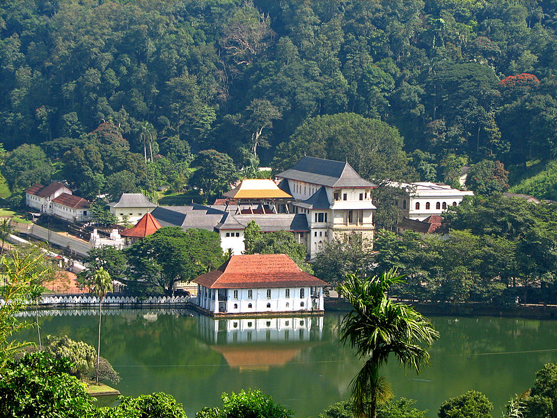
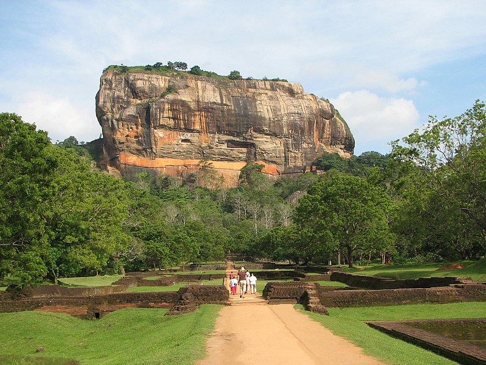
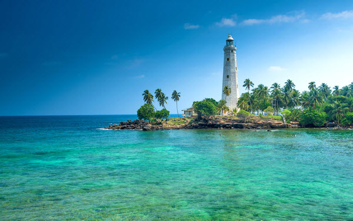

Kandy
Kandy is a large city in central Sri Lanka. It's set on a plateau surrounded by mountains, which are home to
tea plantations and biodiverse rainforest. The city's heart is scenic Kandy Lake (Bogambara Lake), which is popular for strolling.
Kandy is famed for sacred
Buddhist sites, including the Temple of the Tooth (Sri Dalada Maligawa) shrine, celebrated with
the grand Esala Perahera annual procession.

Sigiriya
Sigiriya, also called Lion Rock or Lion Mountain, site in central Sri Lanka consisting of the ruins of an ancient
stronghold that was built in the late 5th century CE on a remarkable monolithic rock pillar. The rock, which is
so steep that its top overhangs the sides, rises to an elevation of 1,144 feet (349 metres)
above sea level and is some 600 feet (180 metres) above the surrounding plain.

Galle
Galle is a city on the southwest coast of Sri Lanka. It’s known for Galle Fort, the fortified old city founded by Portuguese
colonists in the 16th century. Stone sea walls, expanded by the Dutch, encircle car-free streets with architecture reflecting Portuguese,
Dutch and British rule.
Notable buildings include the 18th-century Dutch Reformed Church. Galle Lighthouse stands on the fort’s southeast tip.